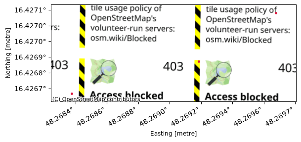

Tutorials#
Minimal Example#
The most basic Fusion Graph possible doesn’t do any processing at all. It consists of one input node and one output node only.
Load Input#
To get started with sensor fusion, we’ll need sensor data. MuFASA isn’t operating on raw sensor values though, rather it consumes already processed detection. It ships with a variety of input nodes to load detections from standardized formats.
We start by loading locations from a GeoJSON[1] Feature Collection in sensor_a.geojson
with a GeoJsonInput node.
from mufasa.io.inputs import GeoJsonInput
src_a = GeoJsonInput("sensor_a.geojson")
You can inspect the data loaded into MuFASA’s internal representation:
src_a.items()
[Location(geometry=<POINT (48.268 16.427)>, timestamp=0.0, properties={}),
Location(geometry=<POINT (48.269 16.427)>, timestamp=0.0, properties={'headquarters': True}),
Observation(geometry=<POINT (48.27 16.427)>, timestamp=0.0, properties={}, confidence=0.78)]
Define Output#
Next, we’ll add an output node to build the simplest Fusion Graph possible.
We choose a LocationOutput node here for demonstration purposes.
It simply collects its inputs into a Python list.
from mufasa.io.outputs import LocationOutput
out = LocationOutput()(src_a)
At the same time, we connected src_a to feed into our new out node by calling it with the respective input node(s).
Execute Fusion#
Finally, we assemble the Fusion Graph. The Graph needs to know the IO boundary nodes.
from mufasa import Graph
graph = Graph(inputs=[src_a], outputs=[out])
/tmp/ipykernel_88/4019207610.py:3: UserWarning: No CRS specified. Ensure all input data is already in a Cartesian coordinate system with units of metres (e.g. a UTM projection). Using geographic coordinates (WGS84 degrees) will produce incorrect distances and unexpected behaviour.
graph = Graph(inputs=[src_a], outputs=[out])
Now, everything is set up to run our sensor fusion:
graph.run()
Let’s inspect the results via our output node to verify all input data had been passed on.
out.result
[Location(geometry=<POINT (48.268 16.427)>, timestamp=0.0, properties={}),
Location(geometry=<POINT (48.269 16.427)>, timestamp=0.0, properties={'headquarters': True}),
Observation(geometry=<POINT (48.27 16.427)>, timestamp=0.0, properties={}, confidence=0.78)]
Visualization#
This requires MuFASA to be installed with the vis extra dependencies.
We redefine the GeoJsonInput node from above
– the old one is already connected in a Fusion Graph and unfortunately can’t be reused.
src_a = GeoJsonInput("sensor_a.geojson")
This time, we connect it to a Visualization node.
from mufasa.io.outputs import Visualization
vis_out = Visualization()(src_a)
And wrap it in a new Fusion Graph.
Note that we need to set a bbox and resolution this time
– although the graph isn’t processing any Map.
This is due to the fact that the Visualisation node also accepts Maps as input.
This bounding box will also bound the visualization.
The CRS is optional, but it will enhance the visualization with map tiles.
TODO
Shouldn’t the typing mechanism be smart enough to check that no map is produced?
from mufasa import BoundingBox
from mufasa.graph import _suggest_utm_crs
# Infer bounding box from source locations
src_a_geoms = [i.geometry for i in src_a.items()]
xs = [i.x for i in src_a_geoms]
ys = [i.y for i in src_a_geoms]
min_x = min(xs)
max_x = max(xs)
min_y = min(ys)
max_y = max(ys)
x_tol = (max_x - min_x) * .1
y_tol = (max_y - min_y) * .1
bbox = BoundingBox(
min_x - x_tol,
min_y - y_tol,
max_x + x_tol,
max_y + y_tol,
)
graph = Graph(
inputs=[src_a],
outputs=[vis_out],
crs=_suggest_utm_crs(bbox),
bbox=bbox,
resolution=(1, 1),
)
You can also visually inspect the graph structure.
graph.plot_graph()
graph.run()
And finally, after running the fusion, visualize the latest snapshot of data:
vis_out.show(0)

There’s also an animate() method
for data with different time stamps.